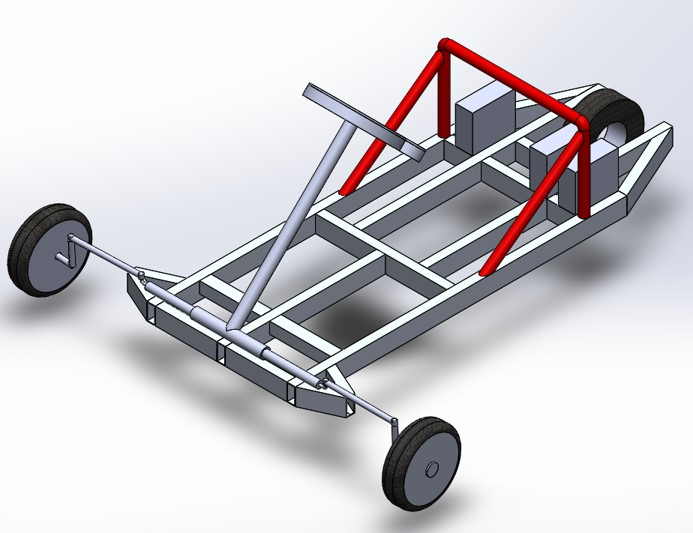
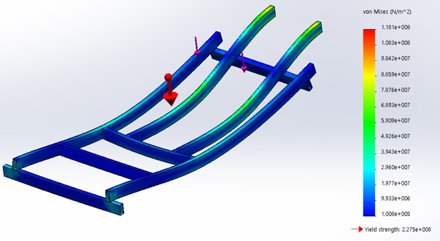
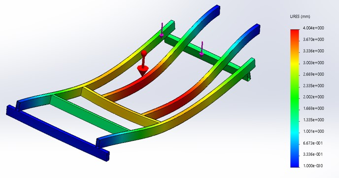
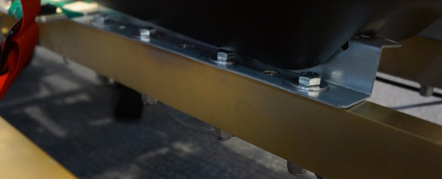

Personal Electric Vehicle with 1kW Motor
Eagle 7.7 | Solidworks | STM32 Programming
A Collaboration Between Harvard and Hong Kong University of Science and Technology, Summer 2016

Building a vehicle from scratch
Over the course of Summer 2016, I worked with a team of five other engineering students (two from Harvard, three from the Hong Kong University of Science and Technology, HKUST) to design and build a personal electric vehicle. This was part of a study-abroad/exchange program called the Harvard-HKUST Summer International Design Experience hosted by Harvard every year. We spent three weeks in Hong Kong during June doing design work, then four weeks at Harvard in Cambridge, MA during July fabricating the vehicle.
Partly for safety and partly to keep the project within reasonable scope, we were given a number of design specifications summarized below
- Budget: $1500
- Maximum power: 400W*
- Maximum drive voltage: 48V
- Seatbelt, Brake Lights, E-Stop Button Required
- Both mechanical and electric braking
Early prototyping in Hong Kong
The progression of prototyping went from full-scale visualization to clay modeling to CAD modeling to fabrication. At each progressive step of the process, we tested the design more and more carefully, spending more time on validation.
Before doing any physical building, we started out the process by visualizing a personal electric vehicle. How big roughly should it be? How should it feel? We took a human-centered design approach to building the vehicle so the first step, naturally, was to figure out what type of design would work best around the human form. We had one team member sit on the ground and assume the position they believed most natural for driving an electric vehicle. We then took sticky notes and roughly laid out where the outline of the vehicle should be.
Two big early design decisions came from this visualization. The first was the three-wheel design, sometimes referred to as the tadpole design. A single back wheel would be much easier to power than two back wheels powered by a differential gear setup. The whole design could be powered from a single motor instead of two (if back wheels were used) making acceleration and going straight much easier
The second design decision we settled on was a tapered back design. The reasoning here is by making the front of the vehicle wide, it would be stable when making turns and allow the driver to "lean in" to turns better. A secondary benefit was a reduction of weight in the back region - less weight would mean a better top speed. With these design considerations in mind, we began to build clay prototypes of the chassis design.
From left to right, you can see progressive iterations on the chassis design (v1, v2, v3). Our starting point was v1 which was a heavily supported chassis that introduced the single "spinal" support column and triangle supports at multiple points. The material usage for this first chassis was substantial and the weight was a concern, so we moved to reduce bulk in v2.
In v2, the cage at the front of the chassis has been removed to reduce weight and the entire design slimmed down significantly. The metal bars behind the seat are the only extrusion upward in the Z direction. The wheels are supported by angled support metal to alleviate the warping stress on the center of the chassis.
The final revision v3 is just a minor improvement on v2. Nearly all the angled-cut pieces have been changed to straight-cut pieces to make manufacturing them easier. Every unecessary bar from the chassis has been removed and the chassis has thus been simplified as much as possible at this point. Clay designs early on were advantageous because each model could be constructed in under 15 minutes to accurately capture the substance of the design without worrying about things like exact dimensions and fasteners. I personally built each of these clay models with the team's input.
After settling on clay v3 as the base chassis design, we moved to digitizing the design and building it up in SolidWorks.
Building a Solidworks Model of the Car
Our initial solidworks model for the vehicle reflected the v3 clay design almost perfectly. Every chassis bar was to be made from 2"x1" .125" thick hollow rectangular steel bars. The support area behind the seat was to be made with 1" steel round tube. The entire design was to be welded together.
A few problems emerged regarding the manufacturability of this design though - the biggest one was that the wheel base for the front two wheels was much larger than the steering system we planned on allowed for. We would have to shrink the front of the vehicle significantly to accomodate the pre-built steering system we were purchasing. Also, gaining access to welding proved much more difficult than we initially thought. Every joint would have to be switched from a weld joint to a fastener joint. Lastly, interfacing the round tube to rectangular tube without welding would prove very difficult.
The second Solidworks prototype fixed the majority of the issues in the initial design. The geometry of the chassis is simplified and relies solely on right angles. Instead of steel, the entire design was switched aluminum. Aluminum was approximately a 3rd the weight of steel while being about half as strong. Thus, the strength per weight of aluminum was better. Aluminum allowed us to reduce the weight significantly while keeping the loss in structural strength to a minimum.
 Our simulations in Solidworks showed that the chassis design would support a 200lb individual without deforming too much. A point load was simulated on the spot where the person would be seated and the deflection of the chassis was calculated to be 4.0mm at that point. At the scale we were working at, 4.0mm deflection was negligible and meant our design was strong enough to support the rider.
Final Design

Mounting brackets were made from 1/8" thick steel L-brackets cut to custom 2" pieces to match up to the width of the aluminum. The seat came with mounting rails that, based off of adjusting the width of the supporting bars underneath, could be attached to the chassis directly.
The steering system was a pitman arm. We had initially talked about using a rack and pinion system, but since integrated rack and pinion systems were expensive/difficult to find suppliers for and we weren't going to fabricate a rack and pinion system from scratch, this was not the best solution. The tie-bars are cut down to a custom size to support the front width of our chassis.
The "gas" and break pedals are mounted at a single point and include springs pulling them into their primary upright position as well as magnetic encoders mounted at their rotation point. The "gas" pedal only changes the angle observed by the magnetic encoder. This sensor value is fed to the control system onboard that then powers the motor in accordance with the angle of the pedal using a cubic ramping formula to ease acceleration. The brake pedal is both connected to a physical drum brake as well as a magnetic encoder for e-braking. The software controlling the vehicle uses a press on the brake pedal to reduce speed in the motor by running a reverse current.
The motor was a 36V motor rated for up to 600W. It ran at 480rpm giving the vehicle a top speed of roughly 20mph. While we were supposed to try to keep the operating wattage to 400W, it proved essentially impossible. We were constantly drawing between 30 and 35 amps when starting the car from a still position. When we gave the car a push-start, the current draw at the start could be below 30 amps. At steady velocity, the resting current was just under 30 amps.
The slowly ramping acceleration of the car can be seen in the following video of me test-driving it. The car eventually reaches a good speed of about 10mph, but the acceleration to get to that point draws significant current.
The electric vehicle was a success and is currently on display at the School of Engineering and Applied Sciences at Harvard University.